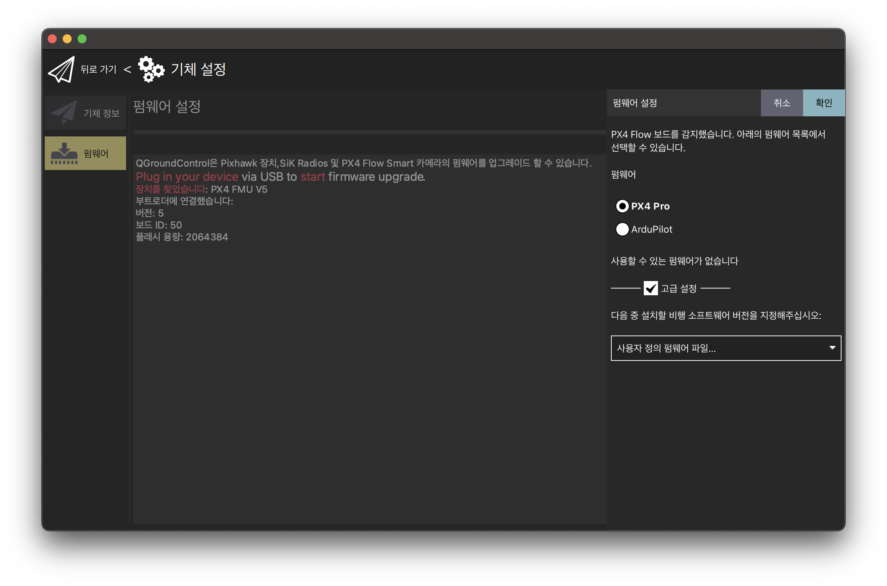
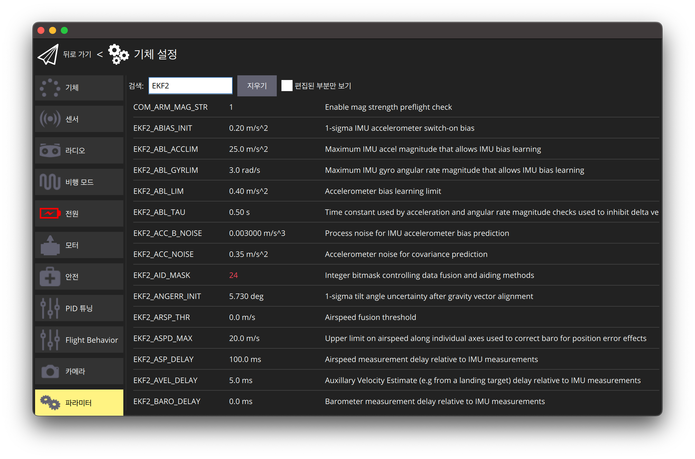
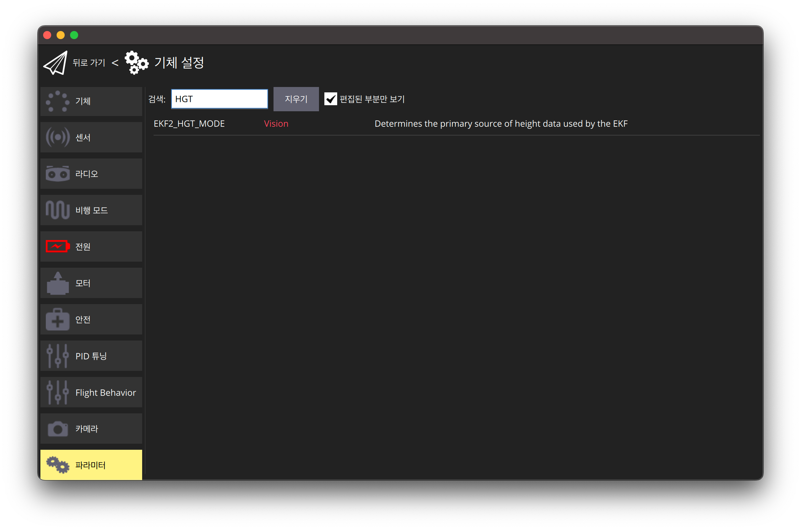
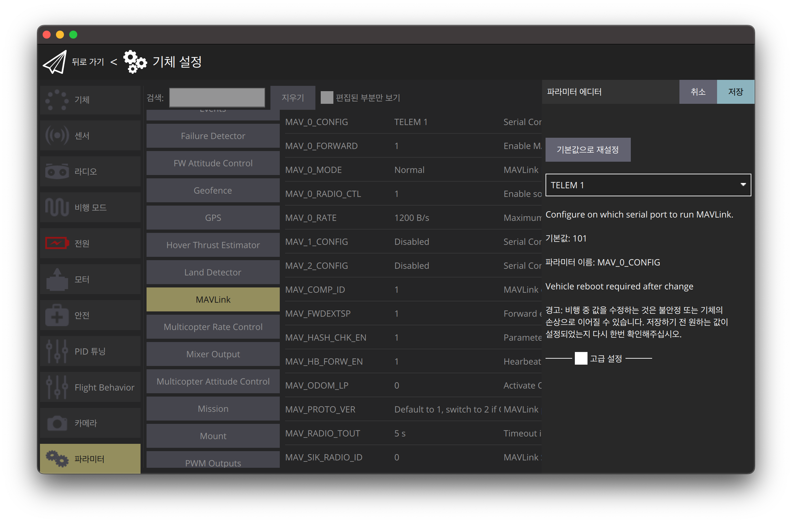
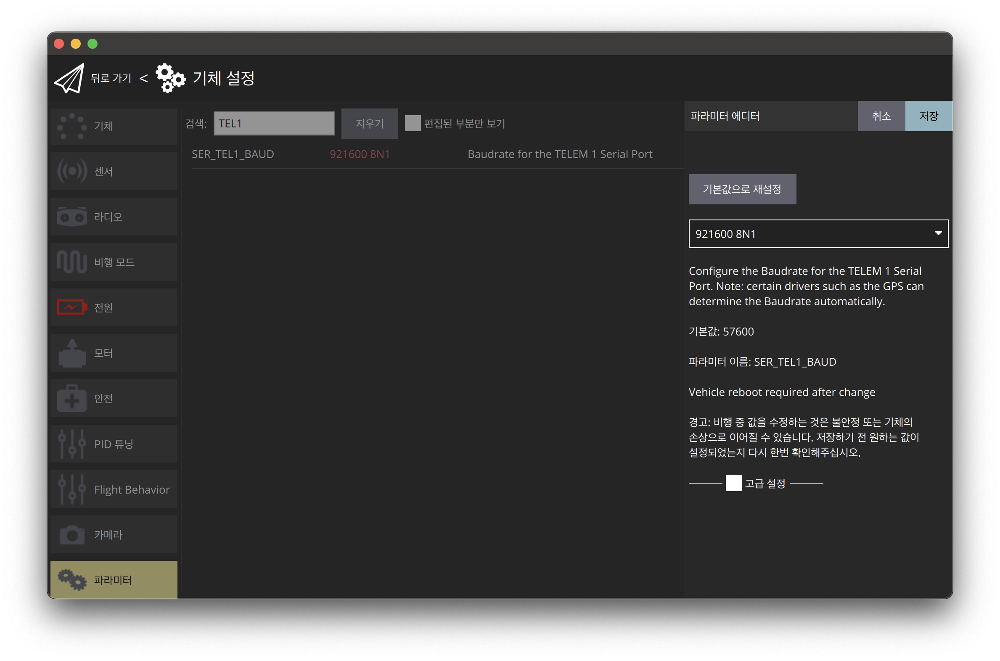

| Version: 0.0.2 |
Loading...
Searching...
No Matches
PX4 Example
Table of Contents
1. Setup environment
1.1. Setup PX4
1.1.1. Install QGroundControl
- Install QGroundControl from the link
1.1.2. Install the PX4 Firmware
- NOTE: Should use specific version of PX4(1.12.3)
- Install the firmware file from the link above which matches with your flight controller
- Open QGroundControl, click the Q Logo, Vehicle Settings
- Click Firmware and upload the downloaded firmware

Select Firmware
Setup the flight controller parameters
EKF2_AID_MASKparameter to 24EKF2_HGT_MODEparameter toVisionCP_DISTparameter to-1COM_OBS_AVOIDparamter to0

Set AID MASK Parameter

Set Height Mode Parameter
1.2. Connect PX4 with UART
- To connect PX4 and companion board with uart, use usb-to-tts and connect it to
TEL1on px4 board

Connect Companion Board with PixHawk
- Then set the port with QGroundContol

Set Communication Port
- Setting baud rate as same as the FlexXlam configuration
- See how to configure FlexXlam (link)
- NOTE: the FlexXlam's baud rate and PX4's baud rate should be SAME

Set Baud Rate
2. Using MavROS
- If you are using our docker, You do not need to follow this part
2.1. Install MavROS binary
# Install mavros ros packages
sudo apt-get install ros-${ROS_DISTRO}-mavros ros-${ROS_DISTRO}-mavros-extras ros-${ROS_DISTRO}-mavros-msgs
# Install GeographicLib
wget https://raw.githubusercontent.com/mavlink/mavros/master/mavros/scripts/install_geographiclib_datasets.sh
sudo bash ./install_geographiclib_datasets.sh